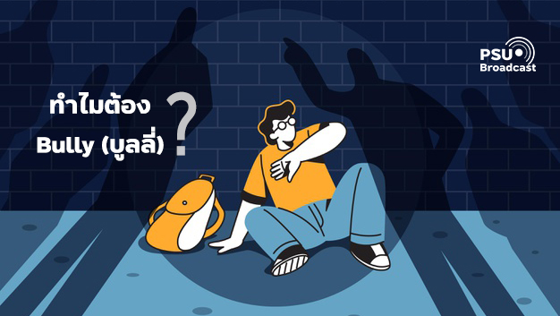

บูลลี่”
ทุกวันนี้เราจะเห็นว่าการกลั่นแกล้งมีอยุ่มากมายในทุกที่ ซึ่งกลายมาเป็นคำเรียกที่รู้จักกันว่า “บูลลี่”
บางคนมองว่าปัญหาเหล่านี้เป็นเรื่องที่เล็กน้อยมาก แต่สำหรับอีกหลายๆ คนมองว่าเป็นภัยใกล้ตัวที่เราต้องรีบแก้ไข เพราะว่าการบูลลี่อาจจะส่งผลให้เกิดความหวาดกลัวต่อสังคมรอบข้าง และยังสามารถนำไปสู่ปัญหาการใช้ชีวิตวัยผู้ใหญ่ได้ นอกจากนี้การบูลลี่อาจเป็นการละเมิดสิทธิมนุษยชนของผู้อื่นได้เช่นกัน
มาดูกันว่า การบูลลี่แท้จริงแล้วมันคืออะไร? เกี่ยวข้องกับสิทธิมนุษยชนอย่างไร? และเราจะสามารถรับมือหรือแก้ไขปัญหาการบูลลี่นี้ได้อย่างไร?
ไม่ว่าจะเป็นการใช้คำพูดหรือการแสดงท่าทางที่รุนแรงด้วยความตั้งใจหรือไม่ได้ตั้งใจก็ตาม หากสิ่งนั้นส่งผลกระทบให้เกิดความเจ็บปวดทั้งทางกายและจิตใจจนทำให้พวกเขารู้สึกด้อยคุณค่า มันคือ “การบูลลี่” ทั้งนั้น
ในสังคมเราจะเห็นว่ามีการบบูลลี่กันหลายเรื่อง เช่น รูปร่างหน้าตา สีผิว รสนิยม เชื้อชาติ ศาสนา ค่านิยม อายุ ทัศนคติหรือสถานะทางสังคม ซึ่งปัจจุบันทางกรมสุขภาพจิตได้แบ่งประเภทของการบูลลี่ออกเป็น 4 ประเภทหลักๆ คือ
- ทางร่างกาย เช่น การชกต่อย การตบตี จนทำให้เกิดความเสียหายและเจ็บปวดต่อร่างกาย
- ทางสังคมหรือด้านอารมณ์ เช่น การกดดัน การยั่วยุ การแบ่งแยกให้ออกจากลุ่มจนทำให้รู้สึกเจ็บปวดและเสียใจ
- ทางวาจา เช่น การพูดจาเหยียดหยาม การดูหมิ่น การด่าทอ การดูถูก การนินทา การโกหกจนทำให้รู้สึกเจ็บปวด
- ไซเบอร์บูลลี่ (Cyberbullying) เป็นการกลั่นแกล้งกันผ่านโลกออนไลน์และเป็นการกระทำที่แพร่หลายมากในปัจจุบัน เช่น การโพสข้อความโจมตีบนสื่อเฟซบุ๊ก การหลอกลวง การส่งข้อความคุกคามทางเพศ ใช้ถ้อยคำหยาบคายจนทำให้อีกฝ่ายอับอายและรู้สึกเจ็บปวด
ดังนั้นการบูลลี่จึงเกิดขึ้นได้ทุกที่ ไม่ว่าจะเป็นที่บ้าน ที่โรงเรียน ที่ทำงาน พื้นที่สาธารณะหรือบนสื่อออนไลน์ ยิ่งพวกเรากระทำสิ่งนี้ด้วย “ความเคยชิน” มากเท่าไร ผลกระทบที่ตามมาก็มีแต่จะเพิ่มและรุนแรงขึ้นเท่านั้น
|  |